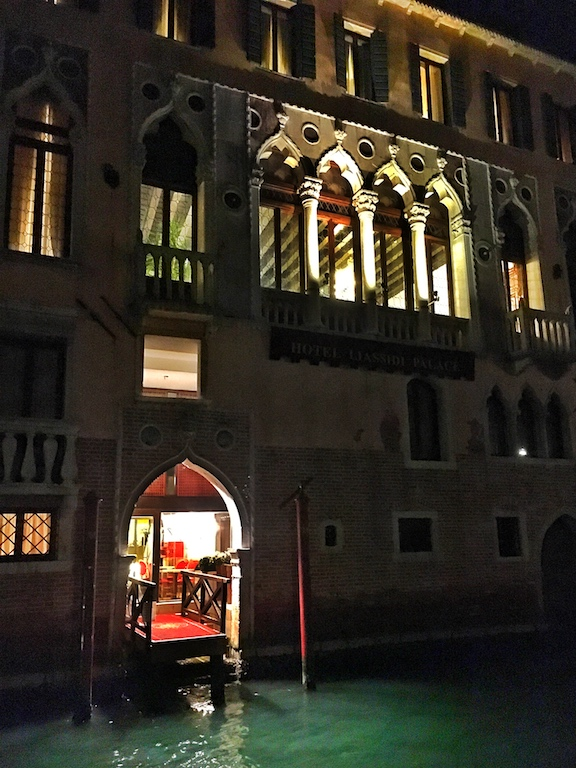

Photo by Francesca Tosolini
Italy offers a multitude of accommodations: bed and breakfasts, pensions, farmhouses, villas, but the most popular remains the hotel. Italian hotels do have some differences compared to the American ones, especially those that are not part of international chains. The first thing to expect when reserving hotel rooms in Italy is that they are much smaller than the American ones. Just consider that most of the hotels in the city centers once used to be private residences. Newer constructions outside the historical centers are more likely to offer rooms that are closer to the American standard. On top of this, note that if the hotel is part of a historical building, chances are that there is no elevator either. PS: In case you wonder, the photo above shows the entrance of the Liassidi Palace Hotel in Venice. {This is an excerpt from chapter 6 "Hotels and accommodations" of the eBook “Italy from the Inside. A native Italian reveals the secrets of traveling in Italy”}